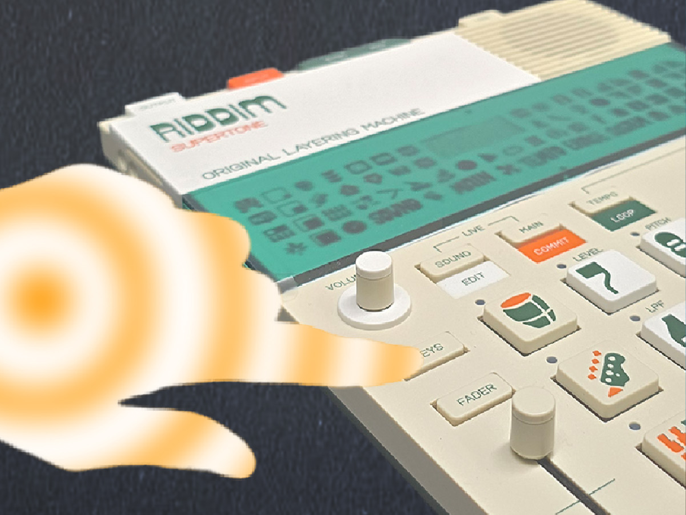
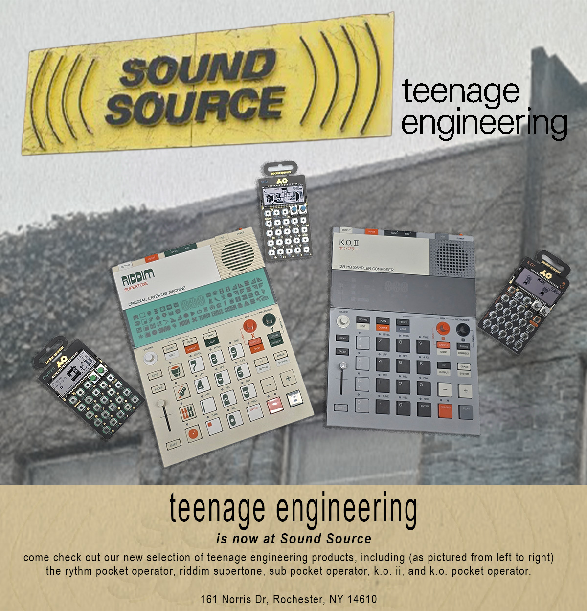
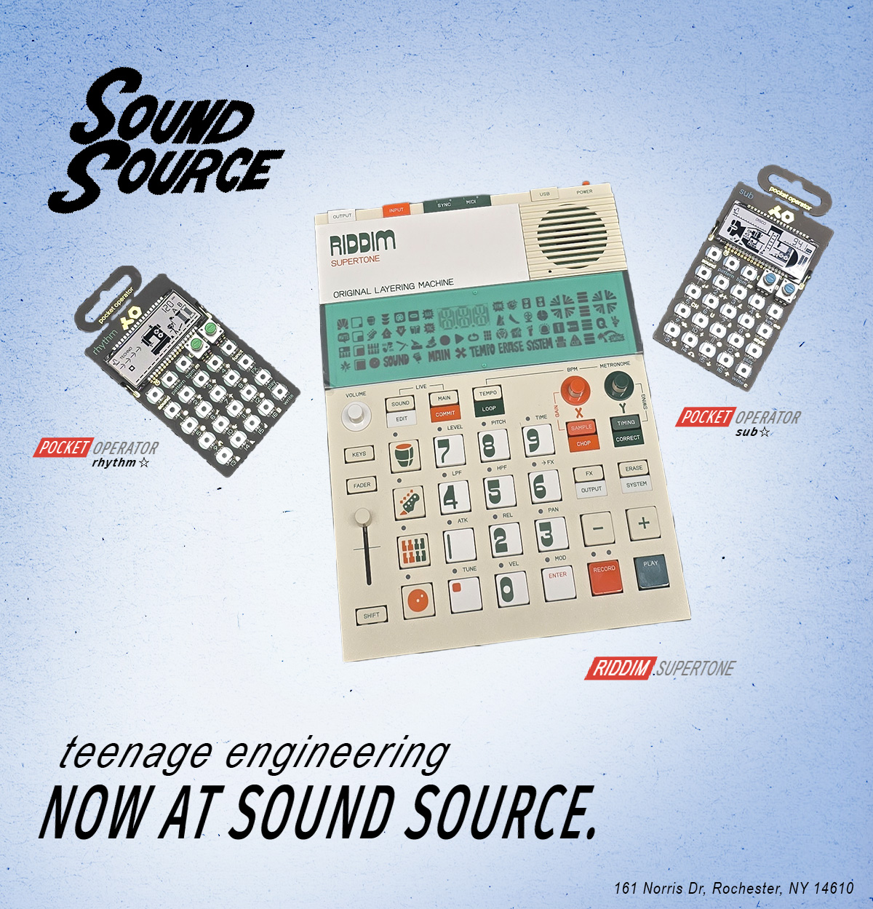
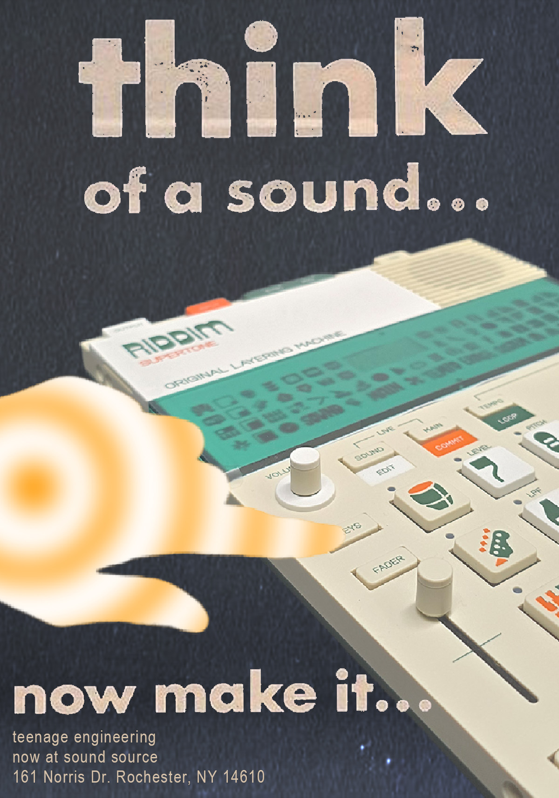
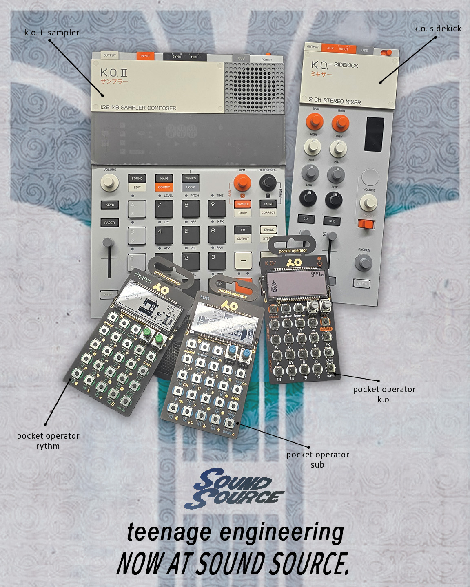
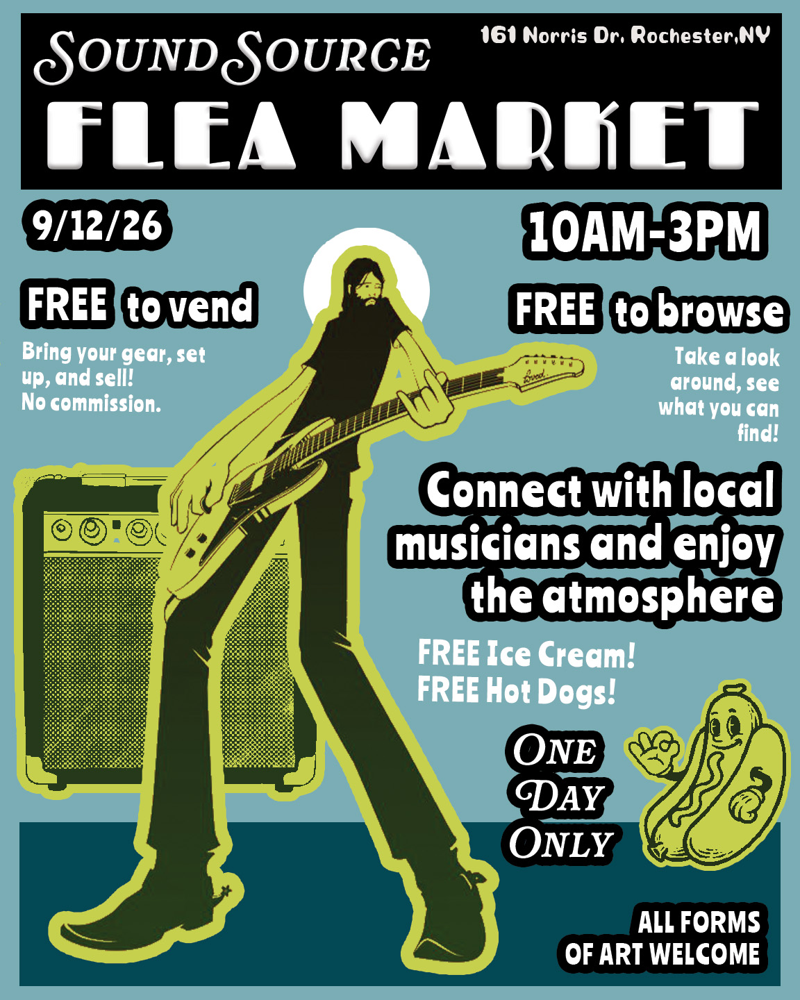
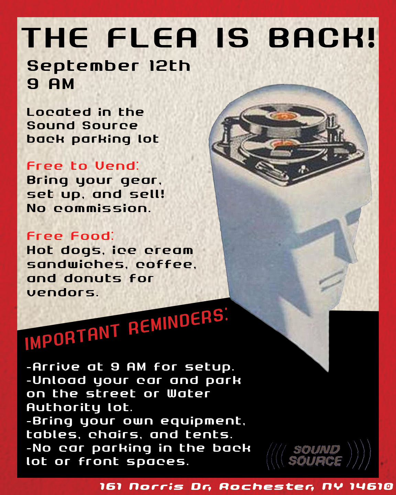

Sound Source is an independent music retailer and rental service based in Rochester, New York. I developed promotional graphics and print materials promotiong the store's newest collaborations and events. The project focused on creating bold, eye-catching visuals that communicated important updates while reflecting the personality and culture of the store.
Sound Source serves a diverse community of music enthusiasts. As part of the store's marketing efforts, a variety of promotional and branded materials were developed to help promote their newesr items and maintain visibility within the local music community.
The project included posters, flyers, and marketing graphics designed for both physical and digital distribution. Each piece was created to be visually engaging, easy to understand, and consistent with the store's identity.
Promotional materials were developed to support the store's events, new arrivals, and community outreach efforts. Designs were created for both print and digital distribution, helping communicate important information while maintaining a cohesive visual identity.






To support the company's branding and marketing efforts, particularly regarding video content, animated logo graphics were developed.